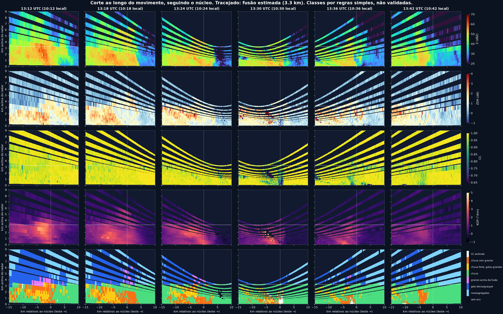
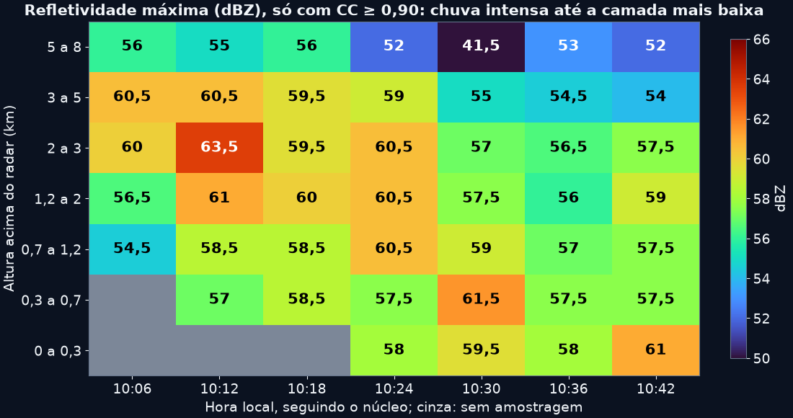
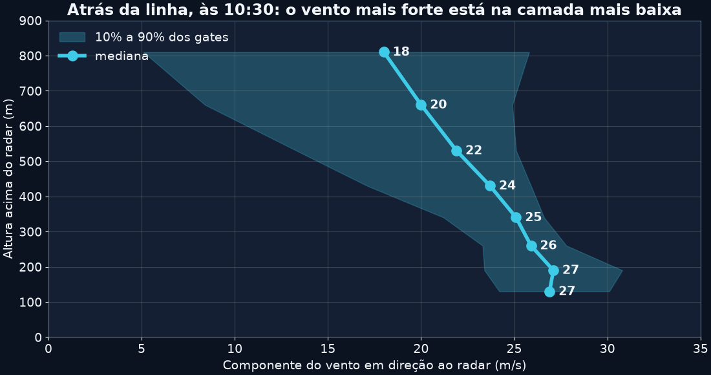
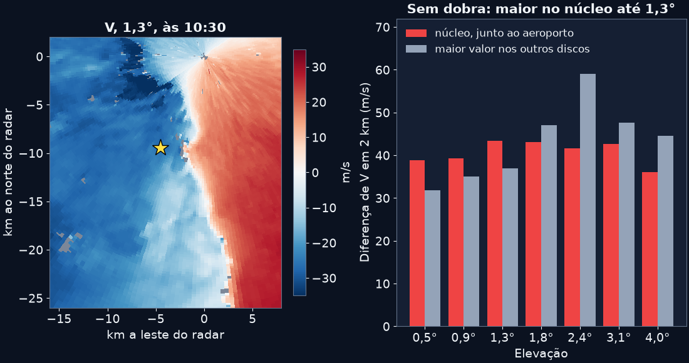
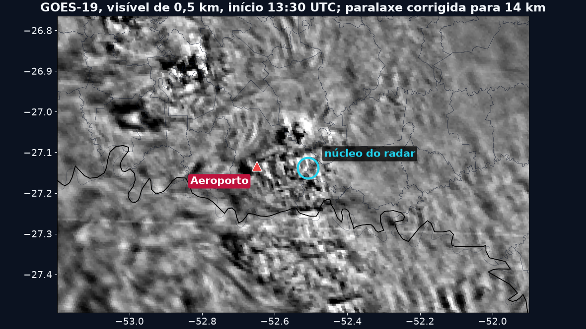
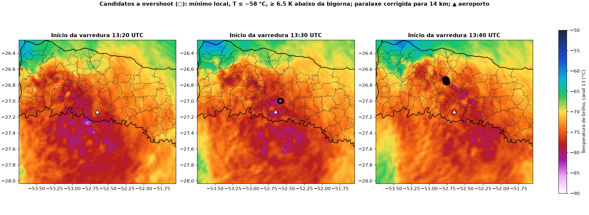
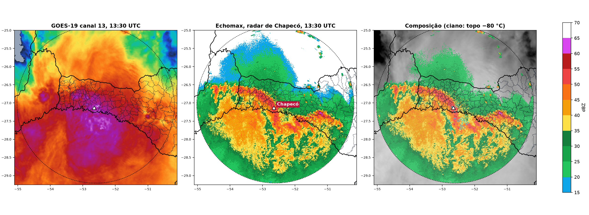
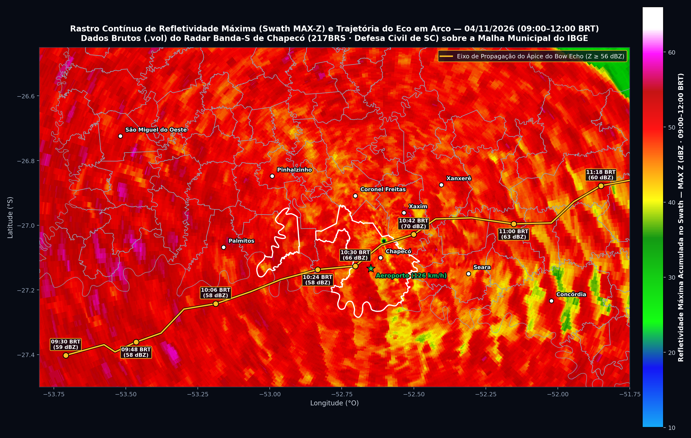
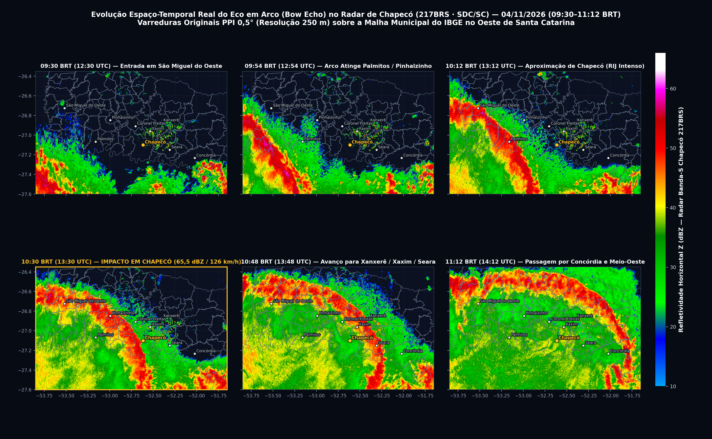

Microexplosão ou tornado em Chapecó?
Ventos de 126 km/h destruíram hangares e telhados na manhã de 4 de novembro de 2026, e a Defesa Civil confirmou tornado. Os dados brutos do radar e do GOES-19 favorecem uma microexplosão dentro de uma linha em arco, mas um sinal sobre o aeroporto segue sem explicação, e só o levantamento de danos fecha o caso. Horários locais (UTC−3).
Isto é ciência, não veredito. Código e resultados estão abertos no GitHub, para qualquer pessoa usar e refutar.
- 09:16–09:56: a linha se organiza sobre o oeste de SC e a fronteira com o RS.
- 10:29–10:48: o arco cruza Chapecó.
- 11:15–11:45: o sistema avança para leste, mantendo a forma.
Por que o ar desce
A flutuabilidade soma o déficit térmico e o peso dos hidrometeoros:
Como ordem de grandeza, $q_h = 8\text{ g/kg}$ pesa o mesmo que cerca de 2,4 K de déficit de temperatura. É um exemplo, não uma medida deste evento.
O que o CC mede
Em chuva, fica perto de 1. Cai com mistura de formas e tamanhos: granizo em fusão, detritos ou gradientes fortes dentro do feixe. Por isso, sozinho, não identifica a causa.
Alturas: o que é "junto ao solo"
O radar está a 822 m de altitude. A 0,5°, o feixe passa ~100 m acima do radar sobre o aeroporto, a cerca de 280 m do chão. Abaixo disso não há dado, e as alturas desta página são acima do radar. A fusão, estimada no próprio radar depois da passagem, fica a ~3,0–3,3 km acima dele.
| Evidência | Observado | Leitura |
|---|---|---|
| Forma no radar | Linha em arco; sem supercélula isolada | Favorece vento em linha reta; não exclui tornado |
| Ciclo da corrente ascendente | Coluna de ZDR às 10:12–10:18; topos esfriam de −79 a −85 °C até 10:20 | Compatível com microexplosão logo depois |
| Chuva perto do solo | Z com CC ≥ 0,90: 58, 59,5 e 58 dBZ na camada mais baixa; em 2–3 km cai de 63,5 para 57 | Apoio fraco; não há descida nítida de um máximo |
| Vento atrás da linha | 27 m/s a 130 m; 18 m/s a 810 m, às 10:30 | Compatível com saída de ar; só uma varredura e só a componente radial |
| Cisalhamento | Às 10:30, em 2 km e sem gates dobrados, fica entre os maiores da varredura até ~0,7 km acima do radar; não se mantém às 10:24 nem às 10:36 | Sinal localizado, mas ambíguo: radar único não separa rotação de cisalhamento |
| CC anômalo | CC ≈ 0,74, ZDR ≈ 0 e KDP baixo; só neste núcleo, entre 45 com Z ≥ 55 dBZ | Principal pendência: granizo em fusão ou detritos |
| Danos | Sem levantamento da direção de queda | Teste que falta para decidir |

A coluna é de chuva intensa
De 10:12 a 10:24, os gates mais fortes têm CC de 0,98 a 0,99 e KDP de 2 a 3 °/km. O ZDR de 1,3 a 2,6 dB indica gotas grandes. Os 63,5 dBZ a 2–3 km, às 10:12, têm ZDR perto de 2 dB, o que não é assinatura de granizo grande seco.
Havia corrente ascendente, que depois enfraquece
Às 10:12 e 10:18, ZDR de cerca de 2 dB aparece até 4,6–5,3 km, 1,5–2 km acima da fusão (coluna de ZDR). Às 10:36, a 5 km, o ZDR já é 0,15 dB. Os topos esfriam até 10:20. É a sequência esperada antes de uma descida, com ressalva: a posição é extrapolada.
O CC anômalo não é chuva
Surge entre 10:24 e 10:30. Nos gates mais fortes, CC ≈ 0,74, ZDR de −0,05 a 0,35 dB e KDP ≈ 1,1 °/km, baixo para a refletividade (chuva de 56–60 dBZ tem KDP ≈ 2,8). Fica a 3–4 km do centro da chuva intensa. Às 10:42, só resta na camada mais baixa, a ~9 km atrás do núcleo.
| Altura acima do radar (10:30) | Até 0,7 km | 0,9 km | 1,2–1,5 km | 2,0 km | 2,5 km | 3,2 km |
|---|---|---|---|---|---|---|
| Fração de CC < 0,85 em Z ≥ 45 dBZ | 35–46% | 25% | 20–23% | 12% | 6% | 1% |
A fração cresce de cima para baixo a partir da fusão. Isso combina com granizo em fusão caindo, mas também com detritos, mais densos embaixo. As 10:24 tinham no máximo 2%. Hidrometeoros sozinhos não decidem: CC tão baixo é incomum para granizo em banda S, e o critério de detritos cabe a 0,5°, mas nenhuma das duas leituras foi confirmada. Vento forte sem rotação também pode erguer destroços do aeroporto, então detritos não provariam tornado.
Demais evidências








Os títulos são os das próprias reportagens. As imagens mostram a destruição, mas não são um levantamento: nenhuma direção de queda foi medida nesta análise, então elas não decidem entre as hipóteses.